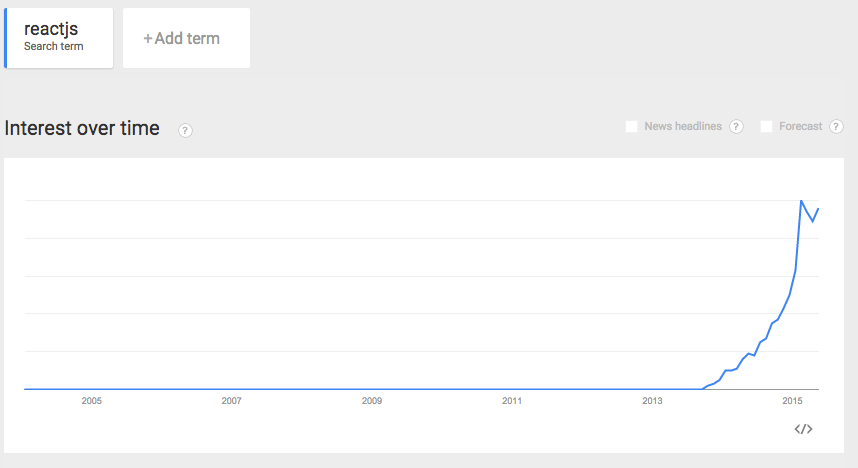
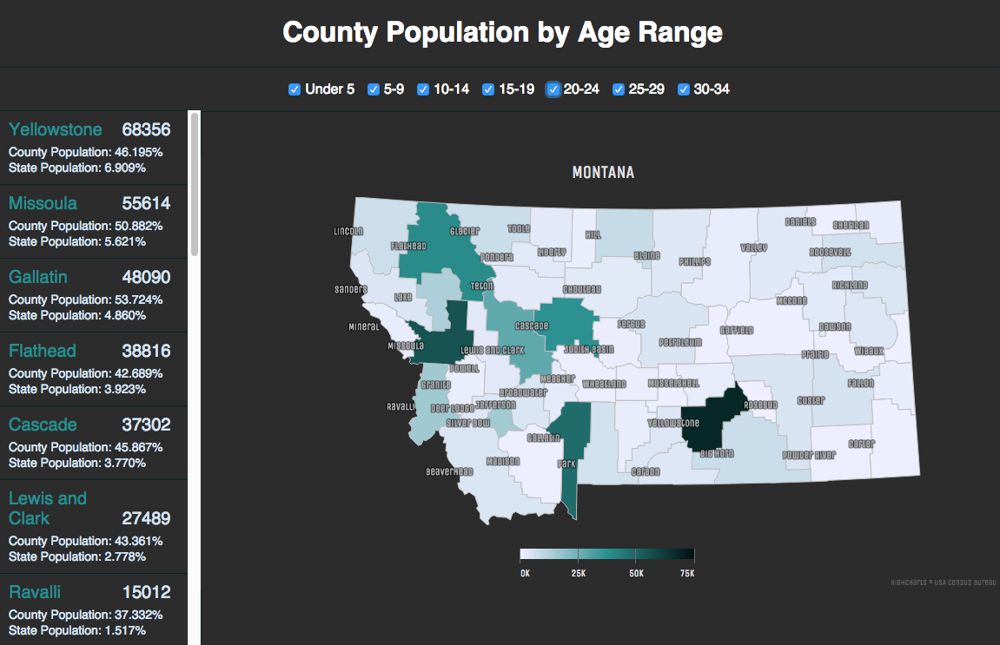
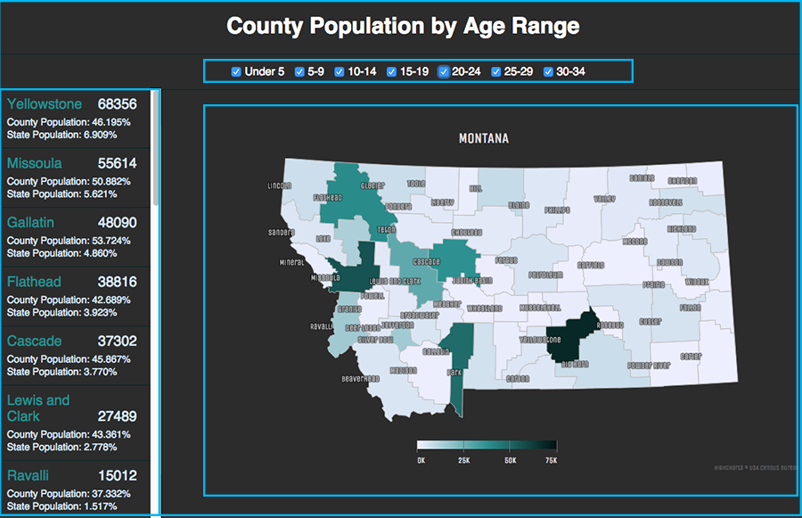
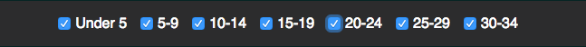
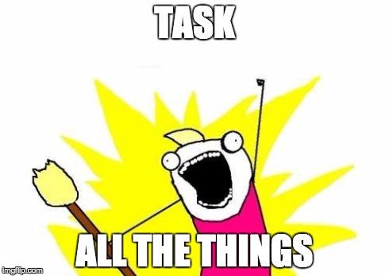
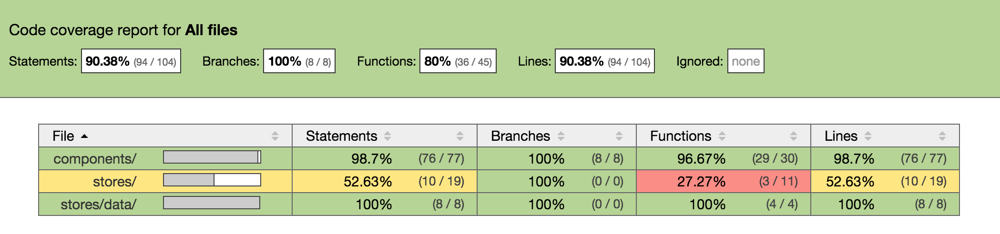
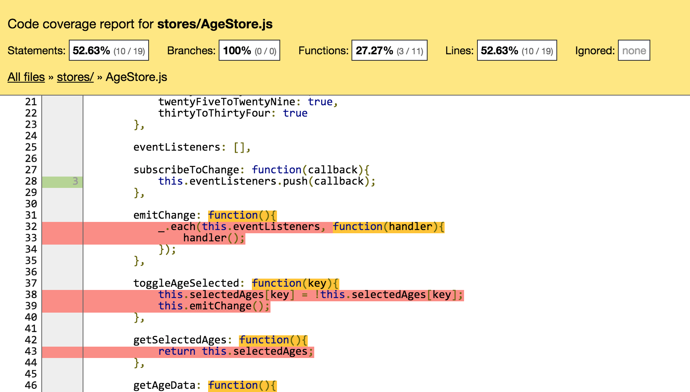
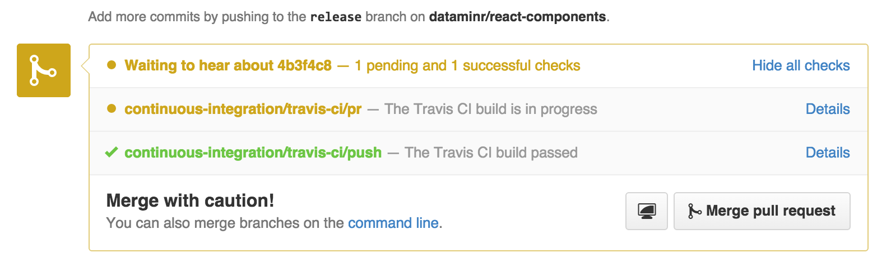

Better Unit Testing in ReactJS
with expanded-react-test-utils
Jason Johnson / @jasonjohnson115
Ernie Turner / @erniewturner
Who are we?
- Front-end Developers at Dataminr
- Formerly at Workiva and Oracle
- Built multiple applications with ReactJS
Graphs Without Labels!
Asking People About Unit Testing React
Objects > DOM
React Test Utils
- Simulate
- renderIntoDocument
- isElement
- isElementOfType
- isDOMComponent
- isCompositeComponent
- isCompositeComponentWithType
- findAllInRenderedTree
- scryRenderedDOMComponentsWithClass
- findRenderedDOMComponentWithClass
- scryRenderedDOMComponentsWithTag
- findRenderedDOMComponentWithTag
- scryRenderedComponentsWithType
- findRenderedComponentWithType
Expanded React Test Utils
- mockReactComponent
- getRouterComponent
- scryRenderedDOMComponentsWithSelector
- findRenderedDOMComponentWithSelector
- findComponentCountWithClassname
- findComponentCountWithTag
- findComponentCountWithSelector
Test Application
Test Application
Page, Controls, List, StateMap Controls Component
- Checkbox click handler
- Checkbox markup builder
- Render function
getAgeToggleMarkup: function(key, enabled) {
return (
<div className="age-type" key={key}>
<input
id={key}
type="checkbox"
checked={enabled}
onChange={this.toggleAgeHandler}
/>
<label htmlFor={key}>
{this.props.ageData[key].label}
</label>
</div>
);
},
renderIntoDocument()
- Detached DOM node
- Runs full component render cycle (getInitialState, componentDidMount, render, etc)
- Returns React class instance
var controlsInstance;
beforeEach(function(){
controlsInstance = ReactTestUtils.renderIntoDocument(
<Controls
ageData={ageData}
selectedAges={selectedAges}
/>
);
});
...
Direct Object Testing
//Call function to test
var control =
controlsInstance.getAgeToggleMarkup('underFive', true);
//Grab elements at proper child index
var checkbox = control.props.children[0],
label = control.props.children[1];
//Assertions
expect(checkbox.props.checked).toBeTrue();
expect(checkbox.props.id).toEqual('underFive');
expect(label.props.children).toEqual('Under 5');
Partial Render and Tag Query
- [find/scry]RenderedDOMComponentWithTag
- [find/scry]RenderedDOMComponentWithClass
Requires React tree to have been rendered before use
Scry?
Partial Render and Tag Query
//Call function to test
var controlMarkup =
controlsInstance.getAgeToggleMarkup('underFive', true);
//Render view partial
var markup = ReactTestUtils.
renderIntoDocument(controlMarkup);
//Find elements by tag
var checkbox = ReactTestUtils.
findRenderedDOMComponentWithTag(markup, 'input'),
var label = ReactTestUtils.
findRenderedDOMComponentWithTag(markup, 'label');
//Assertions
expect(checkbox.props.checked).toBeTrue();
expect(checkbox.props.id).toEqual('underFive');
expect(label.props.children).toEqual('Under 5');
Simulate.{action}()
- Invoke action handler
- Must pass in DOM node
onClick => Simulate.click()
onChange => Simulate.change()
onKeyDown => Simulate.keyDown
Checkbox Toggle Handler
<input
id={key}
type="checkbox"
checked={enabled}
onChange={this.toggleAgeHandler}
/>
toggleAgeHandler: function(event) {
var key = event.target.id;
AgeStore.toggleAgeSelected(key);
},
//Spy on function we expected to be called
spyOn(AgeStore, 'toggleAgeSelected');
//Find a checkbox to toggle
var checkbox = ReactTestUtils.
scryRenderedDOMComponentWithTag(controlsInstance, 'input')[0];
//Simulate on the actual DOM node
ReactTestUtils.Simulate.change(checkbox.getDOMNode());
//Assertions
expect(AgeStore.toggleAgeSelected).
toHaveBeenCalledWith('underFive');
Expanded React Test Utils
Page Component
render: function() {
return (
<div className="page">
<div className="header-title">
<h1>County Population by Age Range</h1>
</div>
<Controls
ageData={this.ageData}
selectedAges={this.state.selectedAges} />
<List
ageData={this.ageData}
selectedAges={this.state.selectedAges} />
<StateMap
ageData={this.ageData}
selectedAges={this.state.selectedAges} />
</div>
);
}
mockReactComponent
- Replace with plain <div>
- Keep any existing props
- Add/overwrite props
- Requires Jasmine
beforeAll(function(){
ExpandedTestUtils.mockReactComponent({
Controls: {className: 'mock-controls'},
List: {className: 'mock-list'},
StateMap: {className: 'mock-state-map'}
});
});
var controlsInstance = ReactTestUtils.
findRenderedDOMComponentWithClass('mock-controls');
expect(controlsInstance.props.selectedAges).toEqual({...});
[find/scry]RenderedDOMComponentsWithSelector
- Simple selector using classes, tags, IDs
- Pseudo selectors not yet supported
...
...
scryRenderedDOMComponentsWithSelector(
instance,
'#user-list li'
);
Request failed...
Request completed successfully
...
findRenderedDOMComponentsWithSelector(
instance,
'.current-status .passed button'
);
Unit Tests!! Now what?
Automation
Automation Dependencies
Testing Dependencies
Additional Dependencies
Create Grunt Tasks
Unit Testing Necessities
- Static code analysis
- Run unit tests
- Command Line
- All tests
- Filter folder or file
- Easy access to failures
- Browser
- Debug unit tests and code
- Command Line
- Code coverage inspection and thresholds
- Run CI when pushing code and creating pull requests
Static Code Analysis
grunt eslint
eslint:{
target: [
'app/**/*.js',
'!app/compiled/**/*.js',
'!app/js/stores/data/*.js',
'!app/js/tests/*.js',
'!app/**/*.test.js'
]
},
React Support in Eslint
"ecmaFeatures": {
"jsx": true
},
"rules": {
{standard eslint rules}
"react/jsx-boolean-value": 1,
"react/jsx-quotes": 1,
"react/jsx-no-undef": 1,
"react/jsx-uses-react": 1,
"react/jsx-uses-vars": 1,
"react/no-did-mount-set-state": 1,
"react/no-did-update-set-state": 1,
"react/no-multi-comp": 1,
"react/no-unknown-property": 1,
"react/react-in-jsx-scope": 1,
"react/self-closing-comp": 1
},
"plugins": [
"react"
]
Eslint Output
React = require('react');
var AgeStore = require('stores/AgeStore')
var unusedVar = 'What am I doing here?';
Unit Testing Necessities
Static code analysis- Run unit tests
- Command Line
- All tests
- Filter folder or file
- Easy access to failures
- Browser
- Debug unit tests and code
- Command Line
- Code coverage inspection and thresholds
- Run CI when pushing code and creating pull requests
Lint and then Run Tests
Used by CI
grunt test
grunt.registerTask('test',[
'shell:cleanCompiledDirectory',
'shell:jsxCompile',
'eslint',
'jasmine:cov'
]);
Unit Testing Necessities
Static code analysis- Run unit tests
- Command Line
All tests- Filter folder or file
- Easy access to failures
- Browser
- Debug unit tests and code
- Command Line
- Code coverage inspection and thresholds
- Run CI when pushing code and creating pull requests
Filter When Running Tests
- Don't lint
- Don't fail on coverage thresholds
grunt jasmineFilter --filter {/folder|file}
grunt.registerTask('jasmineFilter',[
'jasmine:cov'
]);
Unit Testing Necessities
Static code analysis- Run unit tests
- Command Line
All testsFilter folder or file- Easy access to failures
- Browser
- Debug unit tests and code
- Command Line
- Code coverage inspection and thresholds
- Run CI when pushing code and creating pull requests
summary: trueUnit Testing Necessities
Static code analysis- Run unit tests
Command LineAll testsFilter folder or fileEasy access to failures
- Browser
- Debug unit tests and code
- Code coverage inspection and thresholds
- Run CI when pushing code and creating pull requests
Debug Unit Tests and Code
grunt jasmineDebug --filter {/folder|file}
grunt.registerTask('jasmineDebug', [
'jasmine:debug',
'open:test',
'connect'
]);
Task Requirements
- Open a URL from a Grunt task
- Start a Connect server
- Project Configuration
Open URL and Start Server for Debugging or Coverage
open: {
test: {
path: 'http://localhost:<%= connect.all.options.port%>/_SpecRunner.html'
},
cov: {
path: 'http://localhost:<%= connect.all.options.port%>/bin/'
}
}
connect: {
all: {
options: {
port: port,
hostname: "0.0.0.0",
keepalive: true
}
}
},
Project Configuration
var port = '9001';
var connect = require('../node_modules/grunt-contrib-connect/tasks/connect');
var jasmineConfig = {
src: ['app/compiled/**/*.js', '!app/compiled/lib/*',
'!app/compiled/main.js', '!app/compiled/**/tests/*.js'],
specs: ['app/compiled/**/*.test.js'],
helpers: [
'app/compiled/tests/bind-polyfill.js',
'bower_components/jasmine-expect/dist/jasmine-matchers.js'
],
requireConfigFile: 'app/require.config.js',
compiledDir: 'app/compiled',
paths: {
ExpandedTestUtils: '../../dist/ExpandedTestUtils.min'
}
};
Task Configuration
debug: {
src: jasmineConfig.src,
options: {
specs: jasmineConfig.specs,
keepRunner: true,
helpers: jasmineConfig.helpers,
template: require('grunt-template-jasmine-requirejs'),
templateOptions: {
requireConfigFile: jasmineConfig.requireConfigFile,
requireConfig: {
baseUrl: jasmineConfig.compiledDir,
paths: jasmineConfig.paths
}
}
}
},
Unit Testing Necessities
Static code analysisRun unit testsCommand LineAll testsFilter folder or fileEasy access to failures
BrowserDebug unit tests and code
- Code coverage inspection and thresholds
- Run CI when pushing code and creating pull requests
Code Coverage Inspection
grunt test:cov
grunt.registerTask('test:cov',[
'test',
'open:cov',
'connect'
]);
Task Configuration
cov: {
src: jasmineConfig.src,
options: {
specs: jasmineConfig.specs,
summary: true,
helpers: jasmineConfig.helpers,
template: require('grunt-template-jasmine-istanbul'),
templateOptions: {
replace: false,
coverage: 'bin/coverage/app/coverage.json',
report: 'bin/coverage/app',
thresholds: grunt.cli.tasks[0] === "test" ? {
lines: 90,
statements: 90,
branches: 50,
functions: 75
} : {},
template: require('grunt-template-jasmine-requirejs'),
templateOptions: {
requireConfigFile: jasmineConfig.requireConfigFile,
requireConfig: {
baseUrl: '.grunt/grunt-contrib-jasmine/' + jasmineConfig.compiledDir,
paths: jasmineConfig.paths,
callback: function () {
// path modification for bower dependencies
define('instrumented', ['module'], function (module) {
return module.config().src;
});
require(['instrumented'], function () {
var oldLoad = requirejs.load;
requirejs.load = function (context, moduleName, url) {
if (url.indexOf('bower_components') !== -1 || url.indexOf('dist') !== -1) {
url = url.substring(48);
}
return oldLoad.apply(this, [context, moduleName, url]);
...
Istanbul Project Coverage
Istanbul File Coverage
Unit Testing Necessities
Static code analysisRun unit testsCommand LineAll testsFilter folder or fileEasy access to failures
BrowserDebug unit tests and code
Code coverage inspection and thresholds- Run CI when pushing code and creating pull requests
Test and Deploy with Confidence

Travis CI
Configuring .travis.yaml
language: node_js
node_js:
- "0.12"
before_install:
- npm install -g grunt-cli
- npm install -g bower
- npm install -g react-tools
install: npm install
after_script:
- bower install
- grunt test
Github with Travis CI

Build Passing Badge in README
[![Build Status][travis-image]][travis-url]
[travis-url]: https://travis-ci.org/dataminr/expanded-react-test-utils
[travis-image]: https://travis-ci.org/dataminr/expanded-react-test-utils.svg?branch=master
Starting a New Project?
generator-reactjs-flux
by Dataminr
Need More Examples of Testing React?

react-components
by Dataminr
Want the new test utils for React?
Clone the repo and open this file up in your browser to view the presentation slides
expanded-react-test-utils
by Dataminr